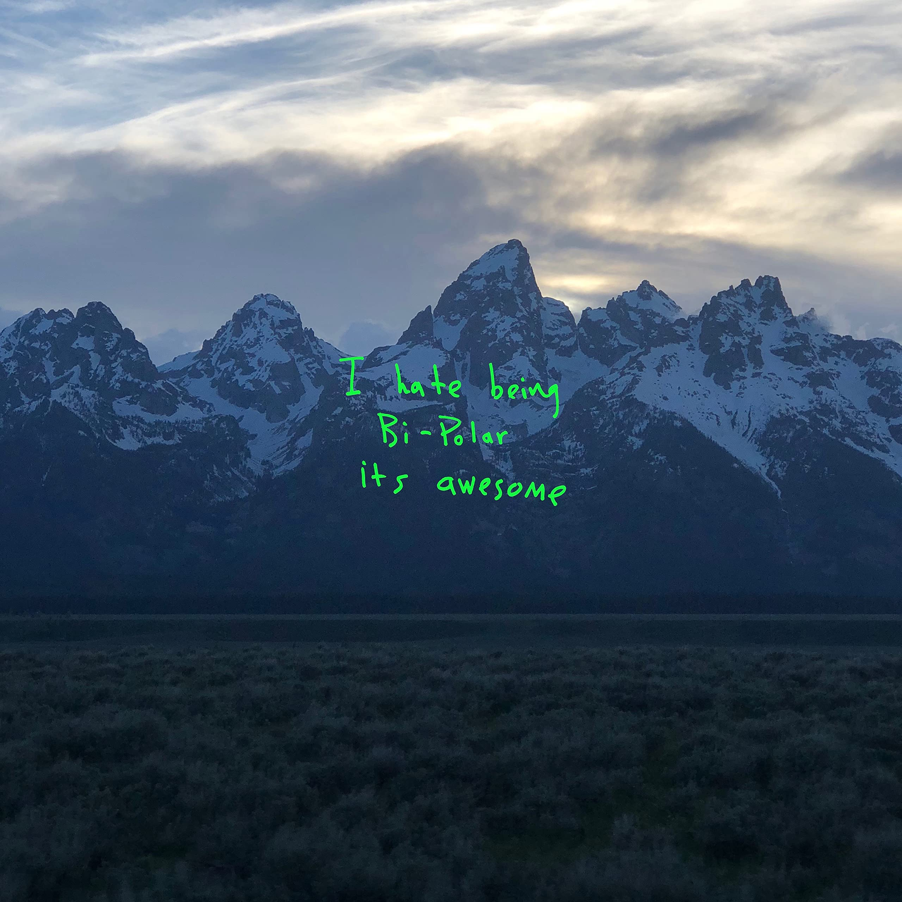
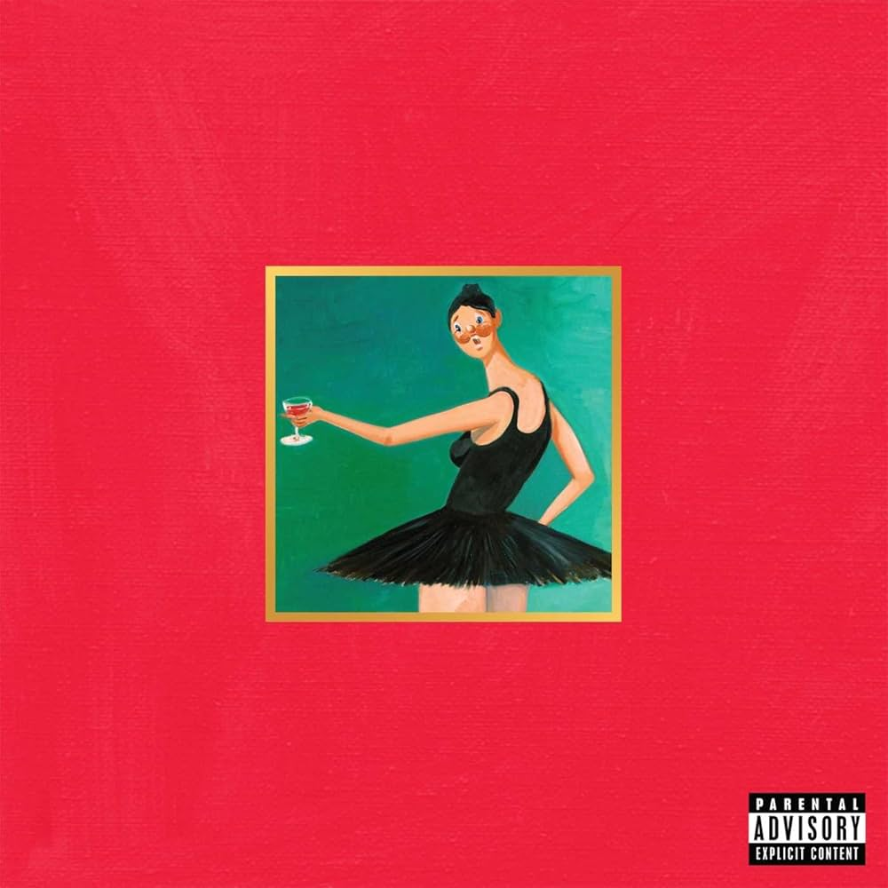

Melhores faixas (Pessoalmente)
°1 Never See Me Again

°2 Ghost Town

°3 Devil In A New Dress

Kanye West é um dos maiores artistas da história, sendo de grande importância para a mudança da forma como as músicas do genêro de Hip Hop são feitas, transicionando do clássico gangster rap para algo mais inovador, sem utilizar a ostentação das ruas que era algo muito comum pro estilo musical da época, começando a falar sobre os problemas que ocorrem com as pessoas, como a bipolaridade e depressão, inseguranças, fé em Deus e consumismo. Nascido em Atlanta e criado em Chicago, ele iniciou sua trajetória na música como um produtor de destaque na gravadora Roc-A-Fella Records, moldando o som de hits no início dos anos 2000. Sua transição para a carreira de rapper solo com o aclamado álbum The College Dropout (2004) desafiou os estereótipos do hip-hop da época, introduzindo samples de soul e letras de forte teor pessoal e social.

